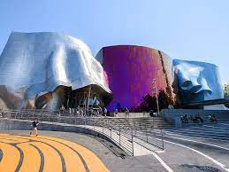
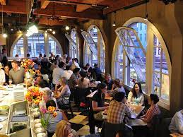
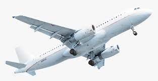

Welcome To Seattle-Travel Guide

More Attractions
Seattle, known as the Emerald City, boasts a plethora of attractions for visitors and locals alike. From the iconic Space Needle offering panoramic views of the city to the vibrant Pike Place Market where you can sample fresh seafood and watch fishmongers toss fish, there's something for everyone in Seattle. Explore the historic Pioneer Square, visit the fascinating Museum of Pop Culture (MoPOP), stroll through the serene Japanese Garden in the Washington Park Arboretum, or take a leisurely ferry ride to Bainbridge Island for stunning views of the city skyline. Whether you're interested in art, culture, food, or nature, Seattle has it all.
More Different Foods and Restaurants
Seattle's culinary scene is as diverse as it is delicious, offering a wide array of cuisines to tantalize your taste buds. From fresh seafood to innovative Pacific Northwest fare, there's something for every palate. Indulge in the city's renowned clam chowder at Pike Place Chowder or savor artisanal cheeses at Beecher's Handmade Cheese. For a taste of authentic Asian cuisine, head to Din Tai Fung for mouthwatering dumplings or Revel for inventive Korean-inspired dishes. I
Travel Plans
Seattle-Tacoma International Airport (SEA) serves as the main airport for the city and offers numerous domestic and international flights. Depending on your preferences and budget, you can choose from a variety of airlines and flight options. Additionally, it's advisable to book your accommodations in advance, especially during peak travel seasons, to secure the best deals and ensure availability.